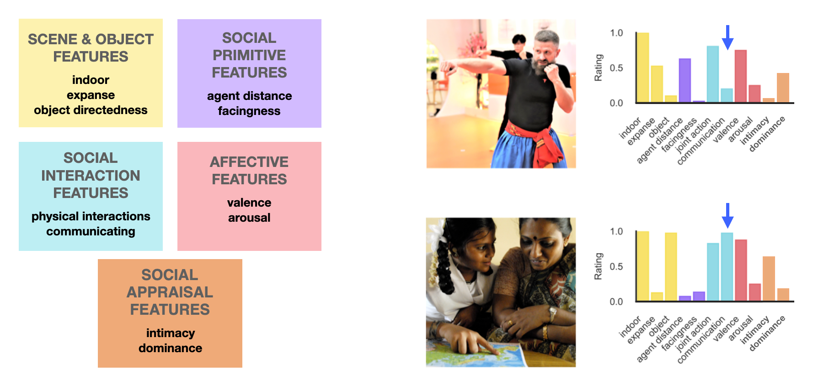
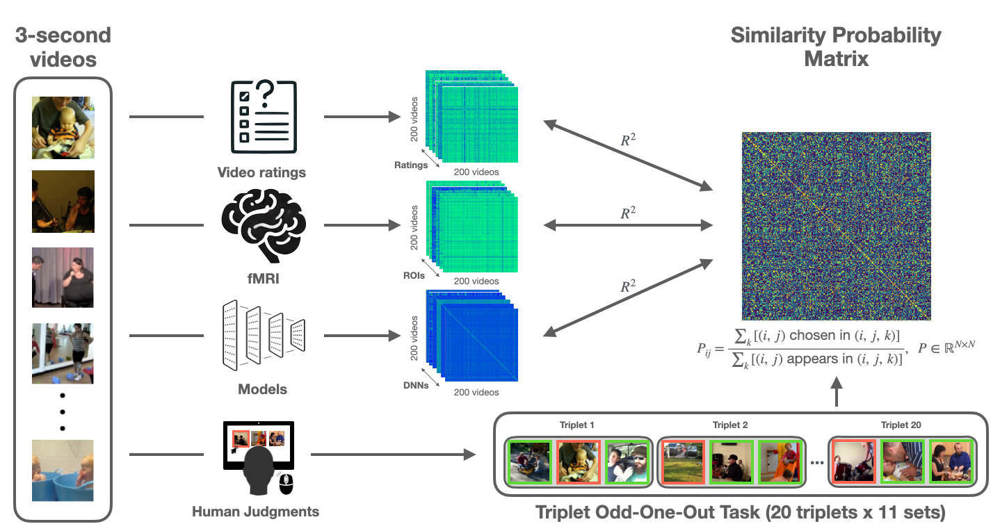
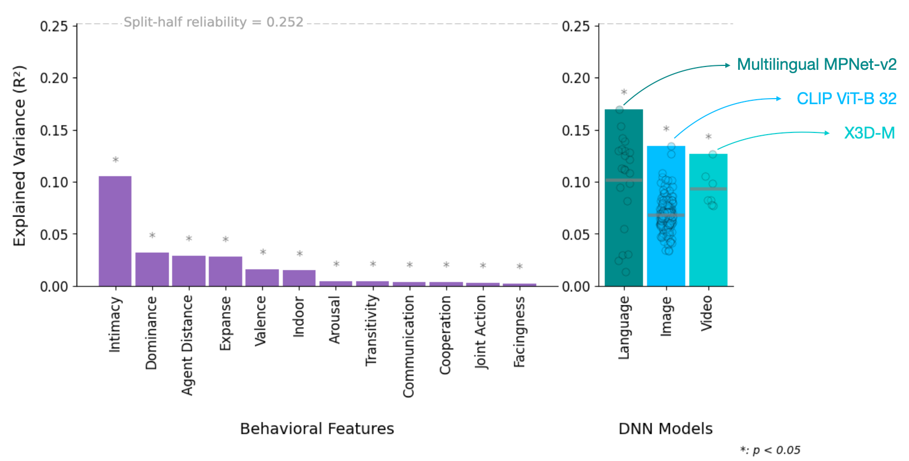
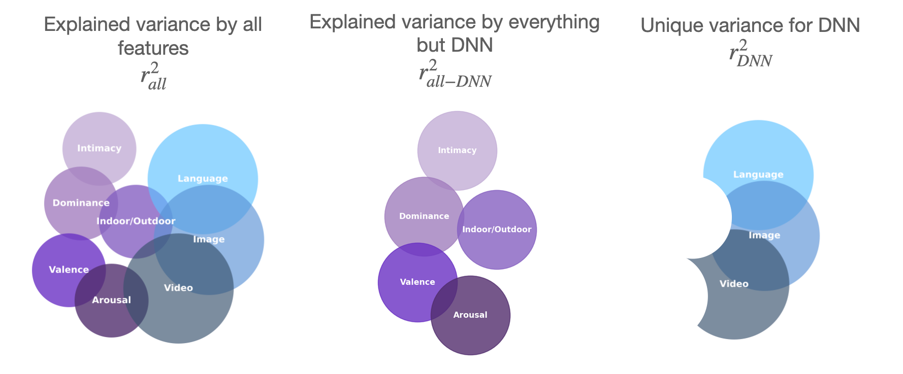
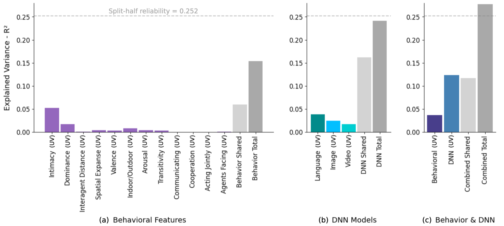
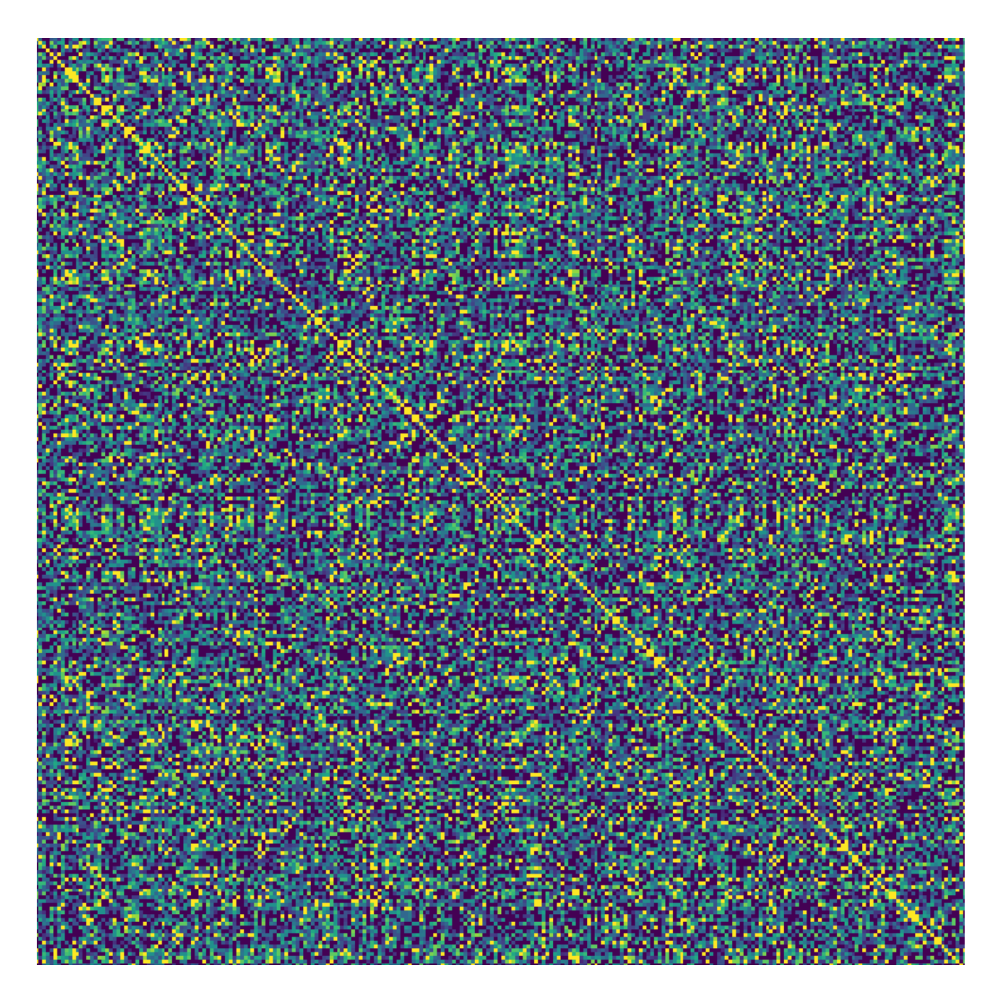
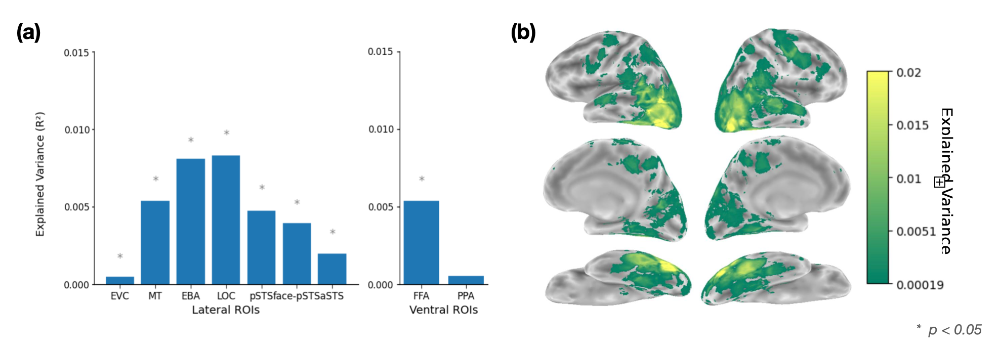

One odd-one-out choice labels one pair as similar and two pairs as dissimilar.
00Overview
How people describe social videos predicts how they group them. Caption embeddings best match human similarity judgments, followed by ratings of intimacy; the judgments align with body- and object-selective cortex, not early visual or scene areas.
65,000+
triplet similarity judgments
250
3-second videos of everyday actions
350+
language, image & video DNNs compared
0.252
split-half reliability (noise ceiling)
Similarity judgments offer insight into the mental representations humans use to perceive actions, form categories, and predict behavior. While prior
research has focused on static scenes, less is known about what drives similarity in dynamic settings and how it aligns with deep neural networks.
We built a similarity matrix for all 250 videos — \(p(i, j)\), the likelihood of choosing \(i\) and \(j\) as similar when paired with different third videos —
and compared it with human feature ratings, fMRI, video DNNs, and word embeddings of human-written captions using representational similarity analysis (RSA).
01Try the task
Participants saw three videos and chose the odd-one-out while focusing on what the people are doing. The two videos not chosen count as “similar”;
the odd-one-out counts as dissimilar to both.
Which clip is the odd-one-out?
Focus on what the people are doing.
02What could drive similarity?
Every video comes with human ratings grouped into five domains. Each is a candidate explanation for how people group social scenes.
Scene & object features (yellow) — properties of the setting and objects, such as indoor vs. outdoor, spatial expanse, and object-directedness.
Social primitive features (purple) — low-level cues about the agents, such as how far apart they are and whether they face each other.
Social interaction features (blue) — whether and how the people are interacting and communicating.
Affective features (pink) — the emotional tone of the scene, such as valence and arousal.
Social appraisal features (orange) — higher-order judgments about relationships, such as intimacy and dominance. These turned out to matter most.

Left: the five feature domains. Right: two example videos with their feature profiles; arrows mark each video's dominant feature, showing how different social events are distinguished.
03Approach

RSA framework. Behavioral features and DNN activations each yield a representational similarity matrix (RSM) that we compare with the human similarity-probability matrix (200 × 200 in the train set).
04Results

Left: “intimacy” explains the most variance among behavioral features, followed by “dominance”; lower-level perceptual and interaction features explain less. Right: language models align best overall (top: multilingual MPNet-v2); CLIP ViT-B/32 leads image models and X3D-M leads video models. Dashed line: split-half reliability (0.252).

Method. Unique and shared contributions of behavioral attributes and DNN families.

(a) Intimacy gives the largest unique contribution among behavioral features. (b) Language models account for the most unique variance among DNNs. (c) Behavioral features and DNNs share much variance, but each explains variance the other misses; together they approach the noise ceiling.

Human similarity matrix across all video pairs.
05Where judgments live in the brain
Click a region to see how well it aligns with human similarity judgments:
Extrastriate body area (EBA) · lateral stream — among the strongest alignment with similarity judgments.
Lateral occipital complex (LOC) · lateral stream — among the strongest alignment, alongside EBA.
Middle temporal area (MT) · lateral stream — next strongest after EBA and LOC.
Posterior superior temporal sulcus (pSTS) · lateral stream — significant alignment; mid- and high-level social perception areas track similarity structure most.
Fusiform face area (FFA) · ventral stream — explains significant variance, highlighting face processing in social perception.
Early visual cortex (EVC) — little to no alignment: low-level visual features are not major drivers of social similarity.
Parahippocampal place area (PPA) · scene-selective — little to no alignment, underscoring social over scene features.

(a) Neural RSA by lateral and ventral ROIs. (b) Searchlight RSA: lateral temporal and occipital cortex align most with human similarity judgments.
06Takeaways
Higher-order appraisals matter most. Judgments rely on social appraisals like intimacy and dominance rather than low-level visual cues.
Language models explain a lot — but not everything. Some variance is uniquely captured by behavioral features, so DNNs and humans attend to overlapping but distinct aspects of social scenes.
A benchmark for social perception. Behavioral annotations, similarity judgments, and brain data enable rigorous evaluation of future models — the foundation for BGS and the latent dimensions project.
07Citation
@article{garcia2025semantic,
title = {Semantic and Social Features Drive Human Grouping of Dynamic,
Visual Events in Large-Scale Similarity Judgements},
author = {Garcia, Kathy and Isik, Leyla},
journal = {Journal of Vision},
volume = {25},
number = {9},
pages = {2621},
year = {2025},
doi = {10.1167/jov.25.9.2621}
}